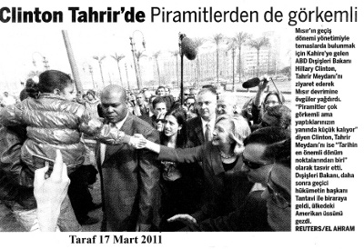
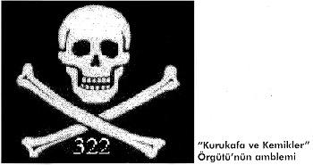

322 sayısının açılımı:
32, Kurukafa ve Kemikler Locası’nın kuruluş yılı olan 1832 sayısının son iki rakamını gösteriyor.
2 ise 1776 yılında Almanya’da kurulan Illuminati Mason Locası’nın
ikinci kez ABD’de S&B adıyla kurulmasını simgeliyor.